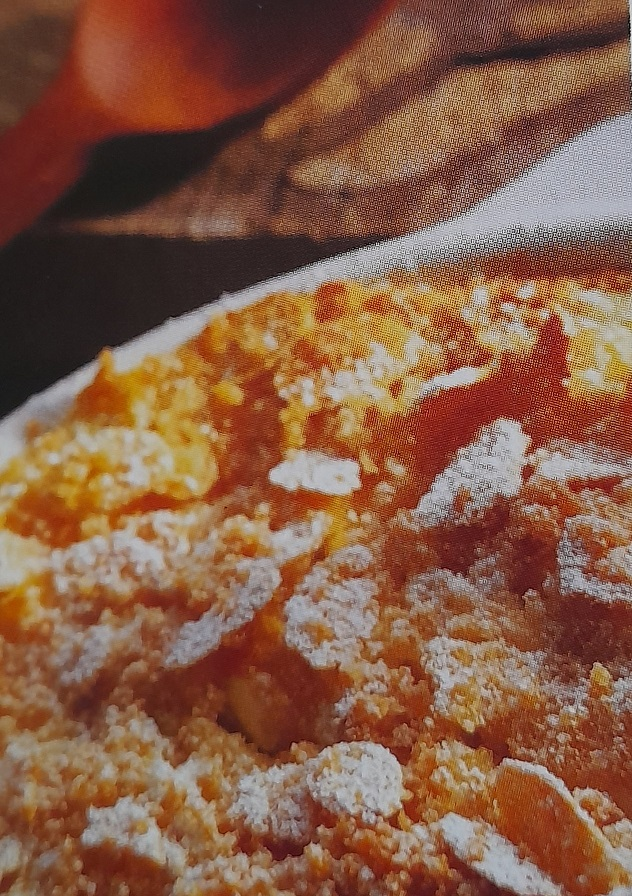

Echter Nudelpudding

 15 Min
15 Min
 simpel
simpel
 28.09.2020
28.09.2020
Zutaten für
60 g
Butter, plus etwas mehr zum Einfetten
200 g
Eier-Bandnudeln
125 g
Frischkäse
250 g
Hüttenkäse
100 g
Puderzucker
2 Eier
leicht verquirlt
125 g
saure Sahne
1 TL
Vanillearoma
1 Prise
gemahlener Zimt
1 TL
geriebene Zitronenschale
4 EL
Mandelsplitter
2EL
Semmelbrösel
Zubereitung
1 Eine feuerfeste Form mit Butter einfetten.
2 Nudeln kochen und zur Seite stellen.
3 Frischäse, Hüttenkäse und Zucker verquirlen, nach und nach Eier dazu geben. Dann Saure Sahne, Vanillearoma,Zimt und Zitronenschale und Nudeln dazugeben.
4 Alles in eine Form geben und glatt streichen.
5 Butter in einer Pfanne zerlassen und die Mandeln etwa 1-2 Minuten leicht bräunen. Pfanne vom Herd nehmen und Semmelbrösel einrühren.
6 Mandelmischung über den Pudding streuen und 35-40 Minuten im vorgeheizten Backofen bei 180 Grad backen.
7 Nach Belieben mit Puderzucker bestreuen und sofort genießen.
2 Nudeln kochen und zur Seite stellen.
3 Frischäse, Hüttenkäse und Zucker verquirlen, nach und nach Eier dazu geben. Dann Saure Sahne, Vanillearoma,Zimt und Zitronenschale und Nudeln dazugeben.
4 Alles in eine Form geben und glatt streichen.
5 Butter in einer Pfanne zerlassen und die Mandeln etwa 1-2 Minuten leicht bräunen. Pfanne vom Herd nehmen und Semmelbrösel einrühren.
6 Mandelmischung über den Pudding streuen und 35-40 Minuten im vorgeheizten Backofen bei 180 Grad backen.
7 Nach Belieben mit Puderzucker bestreuen und sofort genießen.
Rezept erstellt von
Marie Willersinn